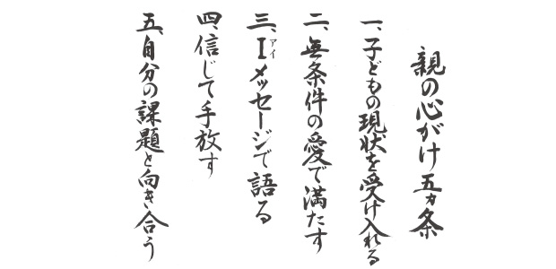

17日のブログ（⇒塾クセジュ主催「子どもを伸ばす親のあり方」所長管野が講演しました！）でも触れましたが、6日の講演会で次のような「親の心がけ5ヶ条」についてお話しました。
親の心がけ5ヶ条
- 子どもの現状を受け入れる
- 無条件の愛で満たす
- Ｉ(ｱｲ)メッセージ
- 信じて手放す
- 自分の課題と向き合う
そこで今日は、その第一条「子どもの現状を受け入れる」についてお話します。
現状を受け入れる
私たちはなかなか「現状」を受け入れたがりません。「受け入れる」ことは、何かあきらめたような、負けたような気がするからでしょうね。
しかし、私が言う「受け入れる」は現状を肯定しろということではありません。
まして「仕方のないこと」だとしてあきらめることでもなく、投げやりに「どうとでもなれ」「もう知らないからな」と見放すことでもありません。
既に起こった出来事は変更できません。なぜなら起こってしまったからです。
それは現実化した時点で確定した「事実」なのです。
確定した事実に対しアレコレ働きかけても、その事実をくつがえすことは不可能です。
私たちは起こった出来事を即座に、これは良いとか悪い、あるいは有利、不利と判断します。その判断はほとんど自動反応で瞬時に行われます。
受け入れがたい出来事が起こると、私たちは即座に不快を感じ「なかったこと」にしたり「認めないぞ」と拒否したり、何としても変えてやるぞと決意したりします。
つまり抵抗するわけです。
たとえば、我が子が勉強せずダラダラソファで寝転んでいるとします。
すると「テストも近いのにいつまでもダラけていてどうするんだ！」と不快になります。
「こんな調子じゃまた点数悪いじゃないか」とイラ立ちます。
そして「このままじゃ良い学校に入れない」
「そうしたら良い就職先も見つからない」⇒不幸な人生…お先真っ暗だ！アーっと連想し「今までガマンしてきたが、もう勘弁ならない」と堪忍袋の緒が切れ怒鳴りつけたりするわけです。
そこで子どもに色々働きかけて、ある時はなだめすかしたり、ある時は怒ったり罰を与えたり、勉強しないといかに不利かを説いて聞かせたりします。
つまりコントロールするわけですが、たいがいは上手くいきません。というかほとんど逆効果です。
たとえ脅しつけて勉強させても子どもは、形だけの勉強になったり、受け身の姿勢でムリヤリやるため実力は伸びません。
では、この悪循環から脱するにはどうしたら良いのでしょう？
事実を事実として受け取る
まず最初にすべきことは、起こった出来事に対する自動反応つまり価値判断をやめるということです。
「子どもがソファでダラダラしている」という事実に対し、「それは悪いこと」と瞬時に判断している自分に気づくことでもあります。
ダラダラ寝ころんでいる（事実）→悪いこと（判断）→将来不幸（決めつけ）これら一連の自動反応はハッキリ言うと単なる連想もしくは妄想に過ぎません。
不安、心配というネガティブな感情が作り出す妄想なのです。
良く考えてみてください。今、目の前にソファ寝そべっている我が子がいるという「現実」自体はネガティブでもなくポジティブでもない、ニュートラル（中立的）な現象に過ぎません。
「寝ている我が子」→「将来不幸」
この→は本来つながっていません。
それを勝手に、ソファで寝転ぶ→勉強しない→テスト近いのに困った→また悪い成績を取る→入試に落ちるかも→お先真っ暗→絶望と関連付けているだけなのです。
子どもは単に「寝ているだけ」です。部活で疲れているのかも知れない。少しゴロゴロしたら勉強しようと決めているのかも知れない。
何か悩みがあるのかも知れないのです。
色々な背景が考えられるわけです。
マァ、子どもにもそれなりの事情があるということです。
だからここでの親の正しいあり方としては「子どもがソファで寝転んでいる」（事実）のを
「フーン 寝転んでいるな」とながめ、その事実をそうであると認めることです。
事実を事実として受け入れることです。
その上で「疲れているのかな」「そろそろ起こして勉強するのかこのままベッドで寝たいのか確かめてみるか」など思いがわいてくるならそうすれば良いのです。
そこで親がイライラしたり、テストが近いのにこんなことでは…とか将来不幸などとネガティブに連想する必要は全くないのです。
その不安は「現実」ではないのです。
「子どもの現状」イコール「ネガティブな未来」
とは限らないことを自覚しましょう。
子どもの「現状を受け入れる」ことは、子どもの現状をなす術もなく見逃せとか肯定せよというのではなく、ネガティブに解釈するなという意味です。
否定から出発した行動は全てうまくいかない。
これが真実だからです。
子どもの現状をネガティブにとらえているのは、あくまで親の心の中で起こっている。つまり親の問題であって子どもの問題ではない。
以上の真実を十分知ったうえで、それでも子どもの行動に「問題」があるならその時は冷静に話し合うなり、注意を促すなり現実的対応をとれば良いのです。
そうすれば子どもも聞く耳をもつでしょう。
まずは子どもの「現状」をそうあるものとして受け入れる。
肯定も否定もせず事実として認める。そこが出発点なのです。